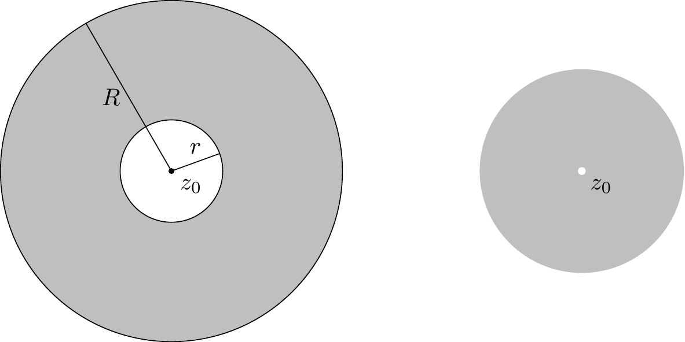
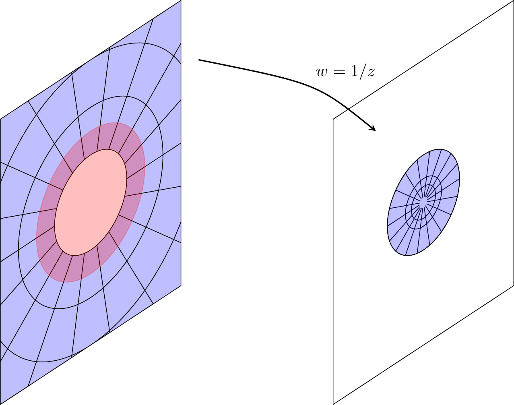
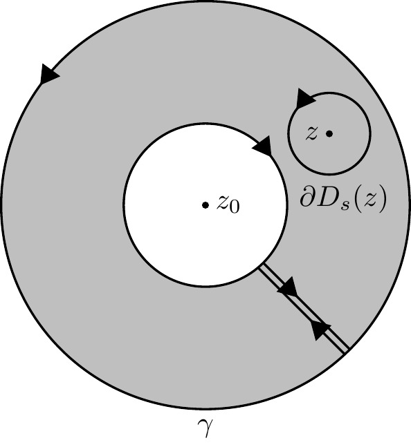

9 Laurent series and singularities
Definition 9.1 A formal bilateral series is an expression of the form
\[P=\sum_{n=-\iy}^\iy a_nT^n \tag{9.1}\]
with coefficients \(a_n\in\C.\) This is just a bi-infinite sequence \((a_n)_{n\in\Z}\) of complex numbers. Equivalently, we have a pair of formal power series \[\begin{align} P_+&=\sum_{n=0}^\iy a_nT^n, &P_-&=\sum_{n=1}^\iy a_{-n}T^n, \end{align}\] such that \[P=P_+(T)+P_-(T^{-1}).\]
\(P_-\) is called the principal part. The residue of \(P\) is the coefficient \(a_{-1}.\)
Definition 9.2 Let \(P\) be a bilateral series Equation 9.1. The domain \(D(P)\) is the set of all \(z\in\C\setminus\{0\}\) such that both series of complex numbers \[\begin{align*} P_+(z)&=\sum_{n=0}^\iy a_nz^n, &P_-(z^{-1})&=\sum_{n=1}^\iy a_{-n}z^{-n} \end{align*}\] converge. We obtain a complex function
\[D(P)\longra\C, P(z)\coloneqq\!\!\!\sum_{n=-\iy}^\iy a_nz^n\coloneqq P_+(z)+P_-(z^{-1}). \tag{9.2}\]
More generally, fix a center \(z_0\in\C.\) We then have a complex function \[P(z-z_0)\coloneqq\!\!\!\sum_{n=-\iy}^\iy a_n(z-z_0)^n\coloneqq P_+(z-z_0)+P_-\bigl((z-z_0)^{-1}\bigr).\]
with domain \(D(P,z_0)=z_0+D(P)\) differing from \(P(z)\) only by a translation.
Remark 9.1. Bi-infinite series of complex numbers \(\sum_{n\in\Z} a_n\) must be treated with care. We have avoided these issues by viewing them as pairs of ordinary series. Another approach would be to pick a bijection \(\nu\colon\N\to\Z\) and consider the ordinary series \(\sum_{k=0}^\iy a_{\nu(k)}.\) However, the limit depends on the choice of \(\nu\) unless the series is absolutely convergent.
Definition 9.3 The open annulus \(A_{r,R}(z_0)\) centered at \(z_0\in\C\) with radii \(0\leqslant r,R\leqslant+\iy\) is the (possibly empty) subset
\[A_{r,R}(z_0)=\{z\in\C\mid r<|z-z_0|<R\}=D_R(z_0)\cap\bigl(\C\setminus\ol D_r(z_0)\bigr).\]The punctured open disk centered at \(z_0\in\C\) with radius \(0<R\leqslant+\iy\) is \[D^\t_R(z_0)=D_R(z_0)\setminus\{z_0\}=A_{0,R}(z_0).\]
The closed annulus is \(\ol{A}_{r,R}(z_0)=\ol{D}_R(z_0)\cap\bigl(\C\setminus D_r(z_0)\bigr).\)
Using the inversion\[i\colon\C^\t\longra\C^\t, z\longmapsto w=z^{-1}, \tag{9.3}\]
we can rewrite Equation 9.2 as \(P(z)=P_+(z)+P_-(w).\) Therefore we can treat the principal part as a power series as well, but on a second complex \(w\)-plane corresponding to the original complex \(z\)-plane via Equation 9.3.
Lemma 9.1 Let \(0\leqslant r\leqslant+\iy.\) Then
\[i^{-1}(D_r(0))=\C^\t\setminus\ol{D}_{1/r}(0),\qquad i^{-1}(\ol D_r(0))=\C^\t\setminus D_{1/r}(0), \tag{9.4}\]
using the conventions \(1/0=+\iy\) and \(1/+\iy=0.\)
Proposition 9.1 Let \(P\) be a bilateral series. If \(D(P,z_0)\neq\emptyset,\) there are unique radii of convergence \(0\leqslant r,R\leqslant+\iy\) such that
\[A_{r,R}(z_0)\subset D(P)\subset\ol{A}_{r,R}(z_0). \tag{9.5}\]
Here \(r=1/\rho_-,\) \(R=\rho_+\) for the radii of convergence \(\rho_\pm\) of the power series \(P_\pm\) as defined in Theorem 5.1.
Moreover, the series \(P_+(z),\) \(P_-(1/z)\) converge absolutely and uniformly on every annulus \(A_{r',R'}(z_0)\) with \(r<r'<R'<R.\)
Proof.
For simplicity, put \(z_0=0.\) According to Theorem 5.1 the power series \(P_+, P_-\) have radii of convergence \(\rho_\pm\geqslant0\) and disklike domains
\[D_{\rho_\pm}(0)\subset D(P_\pm)\subset \ol D_{\rho_\pm}(0). \tag{9.6}\]
As \(P(z)=P_+(z)+P_-(w)\) with \(i(z)=w,\) we can rewrite Definition 9.2 in terms of the preimage operation \(i^{-1}(\textvisiblespace)\) as \[D(P)=D(P_+)\cap i^{-1}\bigl(D(P_-)\bigr).\]
Applying \(i^{-1}\) to Equation 9.6 for \(P_-\) and using Equation 9.4 gives \[\C^\t\setminus\ol D_{1/\rho_-}(0)\subset i^{-1}(D(P_-))\subset \C^\t\setminus D_{1/\rho_-}(0).\]
Combining this with Equation 9.6 for \(P_+\) implies \[\underset{A_{r,R}(0)=}{\underbrace{\bigl(\C^\t\setminus\ol D_{1/\rho_-}(0)\bigr)\cap D_{\rho_+}(0)}}\subset D(P)\subset\underset{\subset\ol A_{r,R}(0)}{\underbrace{\bigl(\C^\t\setminus D_{1/\rho_-}(0)\bigr)\cap\ol D_{\rho_+}(0)}}\]
where we have set \(r=1/\rho_-,\) \(R=\rho_+\) (see Figure 9.1).

The absolute and uniform convergence on smaller annuli follows from the corresponding properties for power series stated in Theorem 5.1.
If the domain of a bilateral series \(P\) with center \(z_0\) contains an non-empty open annulus \(A_{r,R}(z_0)\subset D(P,z_0),\) then \(P\) is called a (convergent) Laurent series at \(z_0.\)
{kind=link}
Theorem 9.1 (Laurent expansion) Let \(f\colon U\to\C\) be a holomorphic function on an open set containing a closed annulus \(\ol{A}_{r,R}(z_0).\) Then \(f\) is equal on \(A_{r,R}(z_0)\) to the convergent Laurent series
\[f(z)=\sum_{n=-\iy}^{\iy} a_n(z-z_0)^n.\]Moreover,\[a_n=\frac{1}{2\pi i}\int_{\6D_r(z_0)}\frac{f(\ze)}{(\ze-z_0)^{n+1}}d\ze \tag{9.7}\]
Proof.
Let \(z\in A_{r,R}(z_0).\) Let \(\ga\) be the contour shown in Figure 9.2 that runs around and connects the two boundary components of the annulus. Pick \(s>0\) such that \(D_s(z)\subset A_{r,R}(z_0).\) Then \(\ga\) is freely homotopic to \(\6 D_s(z).\)

In the path integral over \(\ga,\) the pieces connecting the two boundary components cancel and the inner circle is negatively oriented. Hence, by Equation 8.1 \[f(z)=\frac{1}{2\pi i}\int_{\6 D_s(z)}\frac{f(\ze)}{\ze-z}d\ze,\] applying Theorem 7.2 \[\frac{1}{2\pi i}\int_{\6 D_s(z)}\frac{f(\ze)}{\ze-z}d\ze=\frac{1}{2\pi i}\int_{\6 A_{r,R}(z_0)}\frac{f(\ze)}{\ze-z}d\ze,\] thus, \[f(z) = \frac{1}{2\pi i}\int_{\6 D_R(z_0)}\frac{f(\ze)}{\ze-z}d\ze-\frac{1}{2\pi i}\int_{\6 D_r(z_0)}\frac{f(\ze)}{\ze-z}d\ze\]
Rewrite the first integral as in Equation 8.5, \[\frac{f(\ze)}{\ze-z}=\frac{\frac{f(\ze)}{\ze-z_0}}{1-\frac{z-z_0}{\ze-z_0}} =\frac{f(\ze)}{\ze-z_0}\sum_{n=0}^\iy\left(\frac{z-z_0}{\ze-z_0}\right)^n\!\!.\]
The geometric series converges uniformly because \(|z-z_0|<|\ze-z_0|=R.\) We then apply Corollary 6.1 to exchange the limit and the integral. We similarly rewrite the second integral using \[\frac{f(\ze)}{z-\ze}=\frac{\frac{f(\ze)}{z-z_0}}{1-\frac{\ze-z_0}{z-z_0}}=\frac{f(\ze)}{z-z_0}\sum_{n=0}^\iy\left(\frac{\ze-z_0}{z-z_0}\right)^n\]
and again apply Corollary 6.1, now using \(r=|\ze-z_0|<|z-z_0|.\)
Definition 9.4 Let \(f\colon U\to\C\) be a holomorphic function. A point \(z_0\in\C\setminus U\) is an isolated singularity of \(f\) if there exists \(R>0\) such that \(D^\t_R(z_0)\subset U.\)
By applying Theorem 9.1 to \(A_{r,R}(z_0)\) for all \(0<r<R\) we obtain a Laurent expansion
\[f(z)=\sum_{n=-\iy}^\iy a_n(z-z_0)^n \tag{9.8}\]
that converges on \(D^\t_R(z_0).\)
Definition 9.5 An isolated singularity of \(f\) is called
- removable,
- a pole of order \(m\geqslant1,\)
- essential,
if the principal part \(\sum_{n=-\iy}^{-1}a_n(z-z_0)^n\) of the Laurent expansion Equation 9.8
- is zero,
- has \(a_{-m}\neq0\) and \(a_n=0\) for all \(n<-m,\)
- has infinitely many non-zero terms.
We can restate Definition 9.5 without reference to Laurent expansions. If \(z_0\) is a removable singularity, then Equation 9.8 is a power series which by Theorem 5.1 defines a holomorphic \(D_r(z_0).\) In other words, \[\text{$z_0$ removable singularity}\iff\text{$f$ extends holomorphically to $U\cup\{z_0\}.$}\]
If \(z_0\) is a pole of order \(m,\) then \((z-z_0)^mf(z)\) has a removable singularity. So \(g(z)=(z-z_0)^mf(z)=g(z)\) is a holomorphic function on \(U\cup\{z_0\}\) and \[\text{$z_0$ pole of order $m$}\iff f(z)=\frac{g(z)}{(z-z_0)^m}, \underset{\text{\large with $g(z_0)\neq0.$}}{\small\text{ $g$ holomorphic on $U\cup\{z_0\}$}}\]
Theorem 9.2 (Riemann removable singularities) Let \(z_0\) be an isolated singularity of a holomorphic function \(f\colon U\to\C.\) Suppose there exist \(R,C>0\) such that \(|f(z)|<C\) for all \(z\in D^\t_R(z_0).\) Then \(z_0\) is a removable singularity.
Proof.
For all \(n<0\) we can estimate Equation 9.7 using Equation 6.7 and get \[|a_n|\leqslant\frac{1}{2\pi}L(\6D_R(z_0))\frac{C}{R^{n+1}}=CR^{-n}\xrightarrow{R\to0}0.\]
Questions for further discussion
- Define the sum of formal Laurent series in the same way as Equation 5.2. Why can’t we use Equation 5.3 to define the product of formal Laurent series?
- In Definition 9.2, why did we exclude \(z=z_0\)?
- For an isolated singularity, why is \(U\cup\{z_0\}\) always an open set?
- Does the converse of the Riemann removable singularities theorem hold?
9.1 Exercises
Exercise 9.1
Determine whether the singularities of the following holomorphic functions \(f(z)\) are isolated. If so, compute the residue. When applicable, find also the order of the pole or a holomorphic extension.
- \(\frac{z+i}{z^2+1}\),
- \(\frac{1-\cos(z)}{z^2}\),
- \(\frac{1}{\cos(z)-1}\),
- \(e^{1/z}\)
Exercise 9.2
Determine whether the domain \(D(P)\) of the following formal bilateral series \(P\) is non-empty and, if so, find the radii of convergence. i. \(\sum_{n=-\iy}^\iy\frac{z^n}{|n|!}\),
\(\sum_{n=-\iy}^\iy z^n\),
\(\sum_{n=-\iy}^\iy \frac{|n|^{|n|}}{|n|!}z^n.\)
Exercise 9.3
Use the geometric series to find the Laurent expansion of \[f(z)=\frac{1}{z(1-z)}\] on the domains
- \(0<|z|<1,\)
- \(0<|z-1|<1,\)
- \(1<|z|<+\iy.\)
Exercise 9.4
Let \(P=\sum_{n=-\iy}^\iy a_n T^n,\) \(Q=\sum_{n=-\iy}^\iy b_n T^n\) be formal bilateral series. Suppose that both domains \(D(P,z_0),\) \(D(Q,z_0)\) contain a non-empty annulus \(A_{r,R}(z_0).\) Assume that for some radius \(s\) with \(r<s<R\) we have \[P(z)=Q(z),\qquad\text{for all $|z-z_0|=s.$}\]
Prove the identity theorem, namely that \(a_n=b_n\) for all \(n\in\Z.\)
Exercise 9.5
Let \(U\) be open and \(z_0\in U.\) Let \(f\colon U\to\C\) and \(g\colon U\setminus\{z_0\}\to\C\) be holomorphic functions.
- If \(f(z_0)\neq0\) and \(g\) has a pole of order one at \(z_0,\) prove that \(fg\) has a pole of order one at \(z_0\) with \[\Res_{z_0}(fg)=f(z_0)\Res_{z_0}(g).\]
- If \(f(z_0)=0\) and \(f'(z_0)\neq 0,\) prove that \(1/f(z)\) has a pole of order one at \(z_0\) with \(\Res_{z_0}(1/f)=1/f'(z_0).\)